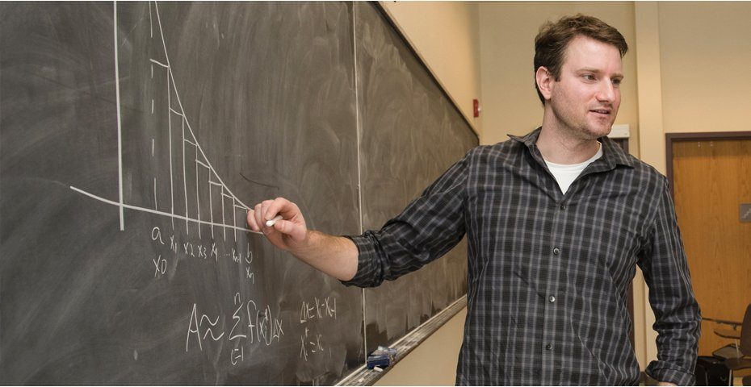

 |
Associate Professor |
Email: James.Adler[at]tufts.edu |
Office Hours: |
I obtained my PhD at the University of Colorado at Boulder in Applied Mathematics, and my
bachelor's degree at Cornell University
in Mathematics and Physics.
From 2009-2011, I was a postdoc in the Department of Mathematics at the Pennsylvania State University working on computational and applied mathematics.